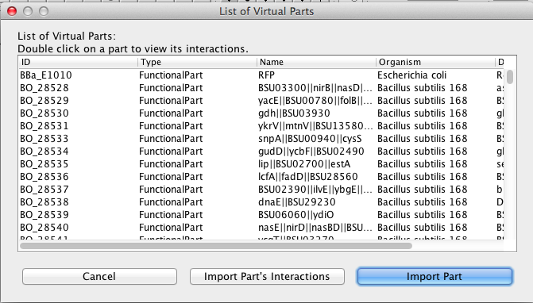
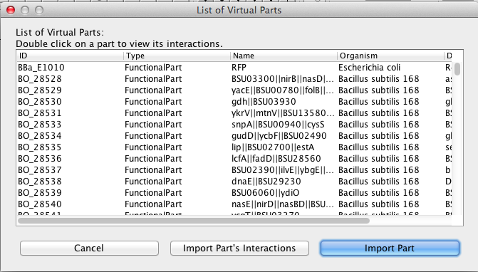
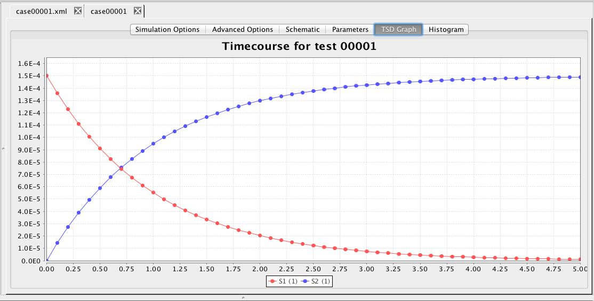
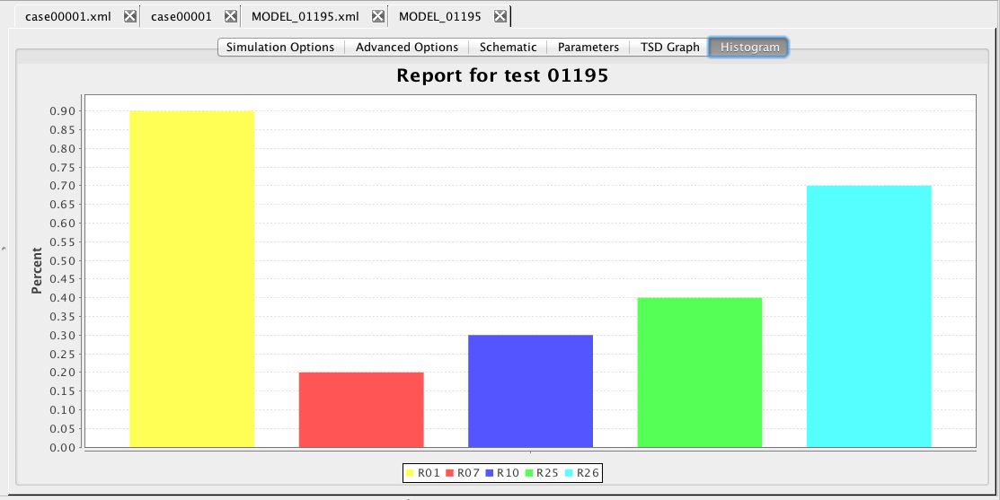

iBioSim Version 2.7
Tutorial
Chris J. Myers
Contents
1 Introduction
2 Project Management
3 Importing Models
4 Model Editor
5 SBOL Browser
6 Analysis Tool
7 Grid Models
1 Introduction
iBioSim has been developed for the modeling, analysis, and design of genetic circuits. While iBioSim primarily targets models of genetic circuits, models representing metabolic networks, cell-signaling pathways, and other biological and chemical systems can also be analyzed.
iBioSim makes extensive use of standard data representations. Models are specified in iBioSim in the
Systems Biology Markup Language
(SBML). It can import all levels and versions of SBML and is able to export Level 3 Version 1. It supports all core SBML modeling constructs except some types of fast reactions, and also has support for the hierarchical model composition, layout, flux balance constraints, and arrays packages. It was the first tool to produce correct results for all examples in the SBML benchmark suite. It has also been tested successfully on the stochastic benchmark suite and the curated models in the
BioModels database.
iBioSim can also import
SED-ML files
that describe simulation experiments. Finally, it is one of the first tools to also support the
Synthetic Biology Open Language
(SBOL), an emerging standard for information exchange in synthetic biology.
iBioSim includes the following components:
- Model Editor - a tool to create a model of a genetic circuit or other biological system.
- SBOL Browser - a tool to view SBOL files and associate DNA components to model elements.
- Analysis Tool - an abstraction-based ODE, Monte Carlo, and Markov analysis tool.
- Learn Tool - a tool to learn a model from time series data (TSD).
- TSD Graph Editor- a tool to visualize TSD files.
- Histogram Graph Editor - a tool to visualize probability data.
This tutorial illustrates the first three of these features of iBioSim using a model of the Genetic Toggle Switch (Gardner et al., 2000).
2 Project Management
Within iBioSim, all files are collected within projects. A project is a collection of models, analysis views, learn views, and graphs. As shown below, iBioSim displays all project files on the left, the open models, views, and graphs on the right, and a log of all external commands on the bottom. The menu bar is located on the top of the window in the Windows and Linux versions. It is located on the top of the screen in the MacOS version.
 To create a new project, select New → Project from the File menu as shown below. You will then be prompted to browse to a desired location and to give a name to the project directory. Enter the name SynBioTutorial. After you do this, click the new button and a new project directory will be created.
To create a new project, select New → Project from the File menu as shown below. You will then be prompted to browse to a desired location and to give a name to the project directory. Enter the name SynBioTutorial. After you do this, click the new button and a new project directory will be created.

3 Importing Models
In order to do analysis within iBioSim, you must first have models to analyze. The simplest way to obtain a model to analyze is to import it from an external source. As shown below, using the menu option File → Import, iBioSim can import models in a variety of ways. First, one can simply import an SBML model from somewhere on the local file system.
 One can also import an SBML model from the EMBL-EBI's BioModels Repository by selecting the menu option File → Import → BioModel. This brings up the window shown below without the model names. Pressing the Get Names button will fetch the names, but this takes awhile the first time, so let's skip that for now. Instead, scroll down to BIOMD0000000507 and Press the Get Description button which brings up the BioModels entry for this model in a browser, which you can see is the original model of the genetic toggle switch. The Get Reference button brings up a browser entry for the original publication. With BIOMD0000000507 highlighted, press OK to fetch this SBML model. Since this model does not include any layout information, you will need to either lay it out by hand or use one of the default layout routines selectable using the Apply Layout icon
One can also import an SBML model from the EMBL-EBI's BioModels Repository by selecting the menu option File → Import → BioModel. This brings up the window shown below without the model names. Pressing the Get Names button will fetch the names, but this takes awhile the first time, so let's skip that for now. Instead, scroll down to BIOMD0000000507 and Press the Get Description button which brings up the BioModels entry for this model in a browser, which you can see is the original model of the genetic toggle switch. The Get Reference button brings up a browser entry for the original publication. With BIOMD0000000507 highlighted, press OK to fetch this SBML model. Since this model does not include any layout information, you will need to either lay it out by hand or use one of the default layout routines selectable using the Apply Layout icon  . Horizontal Hierarchical layout works well for this model. Click on the "X" to close the window.
. Horizontal Hierarchical layout works well for this model. Click on the "X" to close the window.
 Another source for import of SBML models is from Newcastle University's Virtual Parts Repository. In this case, you can either import a model of the part or of the part's interactions.

Next, you can import a labeled Petri net (LPN) model. Petri net models are a type of discrete modeling formalism similar to a state machine though with more support for the modeling of concurrent systems. LPNs extend Petri nets with labels that indicate when state transitions are enabled, the time they take, and how they update the system state. iBioSim uses the LPN format for Markov chain analysis of biological systems.
We can also import an SBOL file that provides annotated DNA sequences for DNA components. More on this later.
Finally, we can import a SED-ML file that describes a simulation experiment.
Importing a SED-ML file will also import the SBML models required for the simulation followed by performing the simulation. To see how this works, select File → Import → SED-ML File, and browse to the install directory for iBioSim. Continue browsing from here to the directory:
Another source for import of SBML models is from Newcastle University's Virtual Parts Repository. In this case, you can either import a model of the part or of the part's interactions.

Next, you can import a labeled Petri net (LPN) model. Petri net models are a type of discrete modeling formalism similar to a state machine though with more support for the modeling of concurrent systems. LPNs extend Petri nets with labels that indicate when state transitions are enabled, the time they take, and how they update the system state. iBioSim uses the LPN format for Markov chain analysis of biological systems.
We can also import an SBOL file that provides annotated DNA sequences for DNA components. More on this later.
Finally, we can import a SED-ML file that describes a simulation experiment.
Importing a SED-ML file will also import the SBML models required for the simulation followed by performing the simulation. To see how this works, select File → Import → SED-ML File, and browse to the install directory for iBioSim. Continue browsing from here to the directory:
<INSTALL DIRECTORY>/docs/SynBioTutorial/SBMLTestSuite
which contains the SBML testsuite files. Go to test 00001, and select the file:
00001-sbml-l3v1-sedml.xml. This will import an SBML model called case00001.xml and simulate it. Click on the tab labelled TSD Graph to see the result of an ODE simulation of this model. Repeat these steps to import a SED-ML file for test case 01195. This SBML model is a flux balance model, so the analysis performed is flux balance analysis. To see the results, click on the Histogram tab. Now, click on the "X" to close each window.


4 Model Editor
Let us know see how to create a new model using the Model Editor. First, select New → Model from the File menu as shown below. You will then be prompted to enter a model ID. Enter LacI_Inverter. At this point, a Model editor will open in a new tab.


 To add a chemical species, select the Add Species icon
To add a chemical species, select the Add Species icon  and click on the schematic canvas. This will drop a new species with default ID and other values. You may change these defaults by clicking on the selection icon
and click on the schematic canvas. This will drop a new species with default ID and other values. You may change these defaults by clicking on the selection icon
 , and
double-clicking on the species to open the Species Editor. In this case, let us change the ID to LacI and change the Port type to input. We will leave all the other values at their default values. The port type of input indicates that this species will be used as an input for the LacI inverter.
Note that while in the select mode, you can also select an object in the schematic and move it by moving the mouse while holding the left mouse button. Pressing the right mouse button while an object is selected brings up a menu that allows you to delete an object from the schematic. Repeat the steps above to add TetR and GFP species. Give these species port type of output.
, and
double-clicking on the species to open the Species Editor. In this case, let us change the ID to LacI and change the Port type to input. We will leave all the other values at their default values. The port type of input indicates that this species will be used as an input for the LacI inverter.
Note that while in the select mode, you can also select an object in the schematic and move it by moving the mouse while holding the left mouse button. Pressing the right mouse button while an object is selected brings up a menu that allows you to delete an object from the schematic. Repeat the steps above to add TetR and GFP species. Give these species port type of output.
 Next, let's add the pLac promoter, which initiates transcription of the gene that produces the proteins TetR and GFP. To do this, select the promoter icon
Next, let's add the pLac promoter, which initiates transcription of the gene that produces the proteins TetR and GFP. To do this, select the promoter icon  and click on the schematic canvas to drop the promoter with a default ID and parameter values. Double-click on the promoter to bring up the promoter editor. Change the ID to pLac.
and click on the schematic canvas to drop the promoter with a default ID and parameter values. Double-click on the promoter to bring up the promoter editor. Change the ID to pLac.
 The pLac promoter is repressed by the LacI species. To create this relationship, select the repression arc icon
The pLac promoter is repressed by the LacI species. To create this relationship, select the repression arc icon
 , highlight the LacI species, and, while holding the mouse button, stretch the repression arc to the pLac promoter.
, highlight the LacI species, and, while holding the mouse button, stretch the repression arc to the pLac promoter.
 As mentioned earlier, the pLac promoter initiates the production of the TetR and GFP species. Highlight the pLac promoter and, while holding the mouse button, stretch the production arc to the TetR species. Repeat these steps to create a production arc between the pLac promoter and GFP species. Note that the icons selected for this are not important because all arcs from promoters to species are always production arcs.
As mentioned earlier, the pLac promoter initiates the production of the TetR and GFP species. Highlight the pLac promoter and, while holding the mouse button, stretch the production arc to the TetR species. Repeat these steps to create a production arc between the pLac promoter and GFP species. Note that the icons selected for this are not important because all arcs from promoters to species are always production arcs.
 Let us now annotate the LacI inverter with its DNA sequence. To do this, we will need to first import some annotated sequence data stored using the synthetic biology open language (SBOL). Select the File → Import → SBOL File menu option as shown below. This will bring up a file browser. You will need to find the location where iBioSim is installed, and the file you want to import should be located in iBioSim/docs/SynBioTutorial/SBOL/GeneticToggle.sbol.
Let us now annotate the LacI inverter with its DNA sequence. To do this, we will need to first import some annotated sequence data stored using the synthetic biology open language (SBOL). Select the File → Import → SBOL File menu option as shown below. This will bring up a file browser. You will need to find the location where iBioSim is installed, and the file you want to import should be located in iBioSim/docs/SynBioTutorial/SBOL/GeneticToggle.sbol.
 Next, click on the Model button in the schematic editor which brings up the Model editor shown below.
Next, click on the Model button in the schematic editor which brings up the Model editor shown below.
 Next, click on the Associate SBOL button, highlight the placeholder for the DNA component, and click the Remove button. Then, press the Add button which will open the SBOL browser shown below. In the list of DNA components, scroll down to the component named pIKERightCassette_1, select it, and press OK.
Next, click on the Associate SBOL button, highlight the placeholder for the DNA component, and click the Remove button. Then, press the Add button which will open the SBOL browser shown below. In the list of DNA components, scroll down to the component named pIKERightCassette_1, select it, and press OK.
 The SBOL association editor should now show this DNA component as being associated with this model. We could now add more components, if we wish, but only one is needed for this, so press Ok. We are now done with the LacI inverter model, so let's make sure the model is saved by either clicking on the Save icon
The SBOL association editor should now show this DNA component as being associated with this model. We could now add more components, if we wish, but only one is needed for this, so press Ok. We are now done with the LacI inverter model, so let's make sure the model is saved by either clicking on the Save icon  or selecting the Save option from the File menu.
or selecting the Save option from the File menu.
 Next, repeat the steps above to create a TetR_Inverter model. The TetR inverter has input TetR and output LacI. In the TetR inverter, TetR represses the production of LacI. To indicate this, select the repression icon , highlight the TetR species and stretch the arc to the LacI species. This action creates an implicit promoter P0 that is repressed by TetR and initiates production of LacI. When you associate SBOL with this model, select the pIKELeftCassette_1 component, and select for it to be put on the Minus Strand by checking the box on the SBOL association window. Do not forget to save this model either by clicking on the Save icon or selecting the Save option from the File menu.
Next, repeat the steps above to create a TetR_Inverter model. The TetR inverter has input TetR and output LacI. In the TetR inverter, TetR represses the production of LacI. To indicate this, select the repression icon , highlight the TetR species and stretch the arc to the LacI species. This action creates an implicit promoter P0 that is repressed by TetR and initiates production of LacI. When you associate SBOL with this model, select the pIKELeftCassette_1 component, and select for it to be put on the Minus Strand by checking the box on the SBOL association window. Do not forget to save this model either by clicking on the Save icon or selecting the Save option from the File menu.
 Now, let us put these genetic inverters into a new model called GeneticToggle.
This model will be the top-level model, and all elements of this model will be enclosed in this model's compartment. Compartments are the membrane-enclosed regions where species can be found and reactions take place. iBioSim creates a default compartment initially with the ID of Cell. If you click on the schematic within the Cell compartment, it brings up the compartment editor. Uncheck the "Is Mapped to a Port". This indicates that this compartment should be enclosing this model and not replaced when instantiated in a larger model. Once you press OK, you will notice that the compartment now has rounded corners to indicate that this is membrane enclosed by the compartment Cell.
Now, let us put these genetic inverters into a new model called GeneticToggle.
This model will be the top-level model, and all elements of this model will be enclosed in this model's compartment. Compartments are the membrane-enclosed regions where species can be found and reactions take place. iBioSim creates a default compartment initially with the ID of Cell. If you click on the schematic within the Cell compartment, it brings up the compartment editor. Uncheck the "Is Mapped to a Port". This indicates that this compartment should be enclosing this model and not replaced when instantiated in a larger model. Once you press OK, you will notice that the compartment now has rounded corners to indicate that this is membrane enclosed by the compartment Cell.
 Now, lets add the LacI_Inverter component to this model. Select the Add Component icon
Now, lets add the LacI_Inverter component to this model. Select the Add Component icon  and click on the Schematic canvas opening the Add Component(s) window. In this window, browse the combo box, if necessary, to find your LacI_Inverter model. Pressing OK will then add it to your schematic. Repeat these steps to add the TetR_Inverter.
and click on the Schematic canvas opening the Add Component(s) window. In this window, browse the combo box, if necessary, to find your LacI_Inverter model. Pressing OK will then add it to your schematic. Repeat these steps to add the TetR_Inverter.
 The next step is to connect the components through their species. To do this, add species to the model for LacI, TetR, and GFP. Mark that each of these species degrades, and set the initial amount of LacI to 60. The degrades checkbox means that when this model is analyzed a default degradation reaction will be created which has a rate of 0.0075. Next, highlight the LacI species and stretch a connection to the LacI_Inverter connecting it to its LacI input port. Next, highlight the LacI_Inverter and stretch to the TetR species. In this case, since there are two output ports, you must select the TetR output port is the one desired. Next, highlight the TetR species and stretch to the TetR_Inverter to connect to the TetR input port. Next, highlight the TetR_Inverter and stretch to the LacI species to connect it to its LacI output port. Finally, highlight the Lac_Inverter and stretch to the GFP species being sure to select to connect to its GFP output port.
The next step is to connect the components through their species. To do this, add species to the model for LacI, TetR, and GFP. Mark that each of these species degrades, and set the initial amount of LacI to 60. The degrades checkbox means that when this model is analyzed a default degradation reaction will be created which has a rate of 0.0075. Next, highlight the LacI species and stretch a connection to the LacI_Inverter connecting it to its LacI input port. Next, highlight the LacI_Inverter and stretch to the TetR species. In this case, since there are two output ports, you must select the TetR output port is the one desired. Next, highlight the TetR species and stretch to the TetR_Inverter to connect to the TetR input port. Next, highlight the TetR_Inverter and stretch to the LacI species to connect it to its LacI output port. Finally, highlight the Lac_Inverter and stretch to the GFP species being sure to select to connect to its GFP output port.
 By instantiating these models together, the SBOL associated with each component will now be composed as well. To add some description for this composite DNA component, click on the Model button, followed by the Associate SBOL button on the Model Editor, and finally the Edit Composite button on the SBOL Association window. You can now add an ID, Name, and Description for this composite DNA component as shown below.
By instantiating these models together, the SBOL associated with each component will now be composed as well. To add some description for this composite DNA component, click on the Model button, followed by the Associate SBOL button on the Model Editor, and finally the Edit Composite button on the SBOL Association window. You can now add an ID, Name, and Description for this composite DNA component as shown below.
 Next let us add the complex formation reactions that sequester LacI and TetR preventing them from acting as repressors. First, add the small molecule species IPTG and aTc. Select boundary condition to indicate they are replenished inputs to the system. Next, add the complex species IPTG_LacI and aTc_TetR and mark that they degrade. Now, select the complex formation icon
Next let us add the complex formation reactions that sequester LacI and TetR preventing them from acting as repressors. First, add the small molecule species IPTG and aTc. Select boundary condition to indicate they are replenished inputs to the system. Next, add the complex species IPTG_LacI and aTc_TetR and mark that they degrade. Now, select the complex formation icon  , highlight the IPTG species, and, while holding the mouse button, stretch the complex formation arc to the IPTG_LacI species. Repeat this step to connect complex formation arcs between LacI and this complex, as well as from aTc and TetR to the aTc_TetR complex. Finally, click on the selection icon
, and
double-click on each complex formation to open the Influence Editor. In this editor, change the Stoichiometry of binding (nc) from 2 to 1 by first changing "default" to "custom" then editing the value.
, highlight the IPTG species, and, while holding the mouse button, stretch the complex formation arc to the IPTG_LacI species. Repeat this step to connect complex formation arcs between LacI and this complex, as well as from aTc and TetR to the aTc_TetR complex. Finally, click on the selection icon
, and
double-click on each complex formation to open the Influence Editor. In this editor, change the Stoichiometry of binding (nc) from 2 to 1 by first changing "default" to "custom" then editing the value.
 The final step in the model creation is to add some discrete events to change the amounts of IPTG and aTc, so we may see the genetic toggle switch change state during simulation. First, select the event icon
The final step in the model creation is to add some discrete events to change the amounts of IPTG and aTc, so we may see the genetic toggle switch change state during simulation. First, select the event icon  , and click on the schematic to add an event. This action opens the event editor. In this editor, create an event with ID "IPTG_High", a trigger of "true", and a delay of 2000. Next, click on Add Assignment to bring up the Event Assignment Editor. In this editor, select the variable IPTG and provide the assignment of 60. Press the Add button to add the assignment and the Add button to add the event. This event will cause the amount of IPTG to change to 60 molecules after 2000 seconds of simulation time. Repeat these steps to create an "IPTG_Low" event with a delay of 4000 which assigns 0 to IPTG, an "aTc_High" event with a delay of 6000 which assigns 60 to aTc, and finally an "aTc_Low" event with a delay of 8000 which assigns 0 to aTc.
, and click on the schematic to add an event. This action opens the event editor. In this editor, create an event with ID "IPTG_High", a trigger of "true", and a delay of 2000. Next, click on Add Assignment to bring up the Event Assignment Editor. In this editor, select the variable IPTG and provide the assignment of 60. Press the Add button to add the assignment and the Add button to add the event. This event will cause the amount of IPTG to change to 60 molecules after 2000 seconds of simulation time. Repeat these steps to create an "IPTG_Low" event with a delay of 4000 which assigns 0 to IPTG, an "aTc_High" event with a delay of 6000 which assigns 60 to aTc, and finally an "aTc_Low" event with a delay of 8000 which assigns 0 to aTc.
 You should now have a complete model of the genetic toggle switch that looks like the one below (though locations of elements may be different). Make sure the model is saved by either clicking on the Save icon or selecting the Save option from the File menu.
You should now have a complete model of the genetic toggle switch that looks like the one below (though locations of elements may be different). Make sure the model is saved by either clicking on the Save icon or selecting the Save option from the File menu.

5 SBOL Browser
As mentioned above, a composite DNA component has been constructed for the entire genetic toggle switch. To see this component, click on the GeneticToggle.sbol file in the list of project files to open the SBOL browser. On the right side, scroll down and select the DNA component that you named MyGeneticToggle. You will now see the complete annotated DNA sequence for this component. Note how the pIKELeftCassette_1 has been put on the minus strand while the pIKERightCassette_1 follows it on the positive strand.

6 Analysis Tool
This section describes how to analyze the model just created. The first step is to create an analysis view. To do this, right-click on the model file and select Create Analysis View. Enter the analysis ID GeneticToggle or just press enter. At this point, a new analysis view should open. You should also notice that an icon appears next to your model file. When you click on this, it will show you all of the analysis and learn views associated with this model.

 In order to perform analysis, the analysis tool first converts the model into a detailed reaction-based model. There are three different ways to see the reaction-based model that is produced. If GraphViz is installed on your computer, you can select Network for your Simulation Type. Then, either press the Save and Run icon
In order to perform analysis, the analysis tool first converts the model into a detailed reaction-based model. There are three different ways to see the reaction-based model that is produced. If GraphViz is installed on your computer, you can select Network for your Simulation Type. Then, either press the Save and Run icon  or select the Save and Run option from the File menu. The result will be a GraphViz window that will open to show the reaction-based model such as the one shown below for our example. If it does not open in GraphViz, make sure that you have files with the .dot file extension associated with GraphViz on your computer. You can also view the model in a web browser by selecting Browser for your simulation type. In this case, you should ensure that you have files with the .xhtml extension associated with your favorite browser. Finally, you can save the reaction-based model by selecting Model as your simulation type. In this case, you must provide a new model ID. This new model will appear in your project and it can be opened in the Model Editor. Since this model does not include any layout information, you will need to either lay it out by hand or using one of the default layout routines selectable using the Apply Layout icon .
or select the Save and Run option from the File menu. The result will be a GraphViz window that will open to show the reaction-based model such as the one shown below for our example. If it does not open in GraphViz, make sure that you have files with the .dot file extension associated with GraphViz on your computer. You can also view the model in a web browser by selecting Browser for your simulation type. In this case, you should ensure that you have files with the .xhtml extension associated with your favorite browser. Finally, you can save the reaction-based model by selecting Model as your simulation type. In this case, you must provide a new model ID. This new model will appear in your project and it can be opened in the Model Editor. Since this model does not include any layout information, you will need to either lay it out by hand or using one of the default layout routines selectable using the Apply Layout icon .


 As you can see, this model is quite complex. A simple model can be generated by selecting Abstraction to reduce the model using reaction-based abstractions based on the quasi-steady state assumption. The abstracted model shown below is reduced from 15 species and 13 reactions to just 5 species and 5 reactions.
As you can see, this model is quite complex. A simple model can be generated by selecting Abstraction to reduce the model using reaction-based abstractions based on the quasi-steady state assumption. The abstracted model shown below is reduced from 15 species and 13 reactions to just 5 species and 5 reactions.
 Now, go back to the simulation options tab. Here, make sure that Abstraction is still selected, change the simulation type back to ODE, the simulator to Runge-Kutta-Fehlberg, the time limit to 10000.0, the print interval to 100.0, and enter a Simulation ID of ode. Then, either press the Save and Run icon or select the Save and Run option from the File menu.
After the simulation completes, click on the TSD Graph tab. Double-click on the graph to bring up the graph editor.
Open the ode simulation, highlight Average, select aTc, IPTG, and GFP, change the Title to "ODE Simulation Results", change the X-Axis Label to "Time (seconds)", and change the Y-Axis Label to "Number of Molecules".
Press the OK button.
Now, go back to the simulation options tab. Here, make sure that Abstraction is still selected, change the simulation type back to ODE, the simulator to Runge-Kutta-Fehlberg, the time limit to 10000.0, the print interval to 100.0, and enter a Simulation ID of ode. Then, either press the Save and Run icon or select the Save and Run option from the File menu.
After the simulation completes, click on the TSD Graph tab. Double-click on the graph to bring up the graph editor.
Open the ode simulation, highlight Average, select aTc, IPTG, and GFP, change the Title to "ODE Simulation Results", change the X-Axis Label to "Time (seconds)", and change the Y-Axis Label to "Number of Molecules".
Press the OK button.


 Graphs can be exported in a variety of formats including:
Graphs can be exported in a variety of formats including:
- Time series data format (tsd).
- Comma separated value (csv).
- Column separated data (dat).
- Encapsulated postscript (eps).
- Joint Photographic Experts Group (jpg).
- Portable document format (pdf).
- Portable network graphics (png).
- Scalable vector graphics (svg).
In order to export a graph, you can either click on the Export icon  or select one of the graph export options from the File menu. When using the Export icon, the type of file exported will depend on the extension provided to the file name. Click on the Export icon, browse to a location on your file system, and enter the file name of ode.pdf to create a PDF file for your graph.
or select one of the graph export options from the File menu. When using the Export icon, the type of file exported will depend on the extension provided to the file name. Click on the Export icon, browse to a location on your file system, and enter the file name of ode.pdf to create a PDF file for your graph.
 Now, select the Simulation Options tab again, select Monte Carlo, change the simulator SSA-Direct, the number of runs to 100, set the simulation ID to ssa, and click on the Save and Run icon. Click on the TSD Graph tab. Double-click on the graph to bring up the graph editor. Click on Deselect All to remove the plotted points. Open the ssa simulation directory, and highlight run-1. Select aTc, IPTG, and GFP, and change the title to "SSA Simulation Results". Press the OK button. Click on the Export icon and enter the file name ssa-1.pdf. Repeat these steps to generate graphs for the average (average.pdf).
Now, select the Simulation Options tab again, select Monte Carlo, change the simulator SSA-Direct, the number of runs to 100, set the simulation ID to ssa, and click on the Save and Run icon. Click on the TSD Graph tab. Double-click on the graph to bring up the graph editor. Click on Deselect All to remove the plotted points. Open the ssa simulation directory, and highlight run-1. Select aTc, IPTG, and GFP, and change the title to "SSA Simulation Results". Press the OK button. Click on the Export icon and enter the file name ssa-1.pdf. Repeat these steps to generate graphs for the average (average.pdf).


 Another way to view simulation results is on the schematic. To do this, click on the schematic tab. At the bottom of the window, select the Choose Simulation button, which brings up a window with all the simulations in this analysis view. Open the ssa directory, select run-1.tsd, and press OK.
Another way to view simulation results is on the schematic. To do this, click on the schematic tab. At the bottom of the window, select the Choose Simulation button, which brings up a window with all the simulations in this analysis view. Open the ssa directory, select run-1.tsd, and press OK.
 Now, click on the GFP species, which brings up the Edit Species window. Select the Appearance tab. Here you can select how you want the species to appear as you playback the simulation. You can have it change color, size, and/or opacity on a gradient. You can also select the range of molecule counts to specify the ends of the gradient(s). Finally, you can indicate that these selections are either for this species or all species in the model. For our example, let's make GFP follow a green color gradient, IPTG follow a blue color gradient, LacI follow a cyan color gradient, aTc follow a red color gradient, and TetR follow a magenta gradient.
Now, click on the GFP species, which brings up the Edit Species window. Select the Appearance tab. Here you can select how you want the species to appear as you playback the simulation. You can have it change color, size, and/or opacity on a gradient. You can also select the range of molecule counts to specify the ends of the gradient(s). Finally, you can indicate that these selections are either for this species or all species in the model. For our example, let's make GFP follow a green color gradient, IPTG follow a blue color gradient, LacI follow a cyan color gradient, aTc follow a red color gradient, and TetR follow a magenta gradient.
 Once you have made your selections, you can now play back the simulation. You can either single-step the simulation by pressing the
Once you have made your selections, you can now play back the simulation. You can either single-step the simulation by pressing the  icon or play continuously by pressing the
icon or play continuously by pressing the  icon. The playback can also be paused by pressing the
icon. The playback can also be paused by pressing the  icon and restarted by pressing the
icon and restarted by pressing the  icon.
icon.

7 Grid Models
In the last example, we will build a model with a grid.
Create a grid model using the File → New → Grid Model menu, and name the new model Population. In the create grid window shown below, select your copy of your GeneticToggle model and change the number of rows and columns to 5.
 The schematic in a grid model is a bit different. It includes a grid in which each location can be empty or contain exactly one component. Only components can be added to grids.
The schematic in a grid model is a bit different. It includes a grid in which each location can be empty or contain exactly one component. Only components can be added to grids.
 Next, right-click on the Population model and create an analysis view. Select Abstraction, Monte Carlo, and the SSA-Direct simulator. Set the time limit to 10000 with a print interval of 100, and perform the simulation. Now, go to the schematic tab and press the Choose Simulation button to select run-1.tsd. Click on one of the genetic toggle switch models to bring up the Edit Species editor. Select the GFP species and a green color gradient, and apply to all components with this model. Now, play back the simulation to see the toggle switches turn on and off.
Next, right-click on the Population model and create an analysis view. Select Abstraction, Monte Carlo, and the SSA-Direct simulator. Set the time limit to 10000 with a print interval of 100, and perform the simulation. Now, go to the schematic tab and press the Choose Simulation button to select run-1.tsd. Click on one of the genetic toggle switch models to bring up the Edit Species editor. Select the GFP species and a green color gradient, and apply to all components with this model. Now, play back the simulation to see the toggle switches turn on and off.


File translated from
TEX
by
TTH,
version 3.81.
On 10 Sep 2014, 21:33.